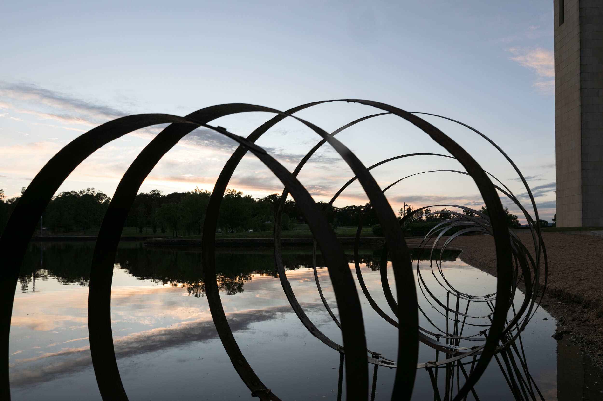

Contour 556 / 2020
9 - 31 OCTOBER 2020
The third edition of contour 556 concluded on Saturday October 31st 2020.
The event launched on Friday 9th October, at King O’Malleys outdoor roof terrace at 131 City Walk, Civic. contour 556 was opened by Senator Katy Gallagher, to an enthusiastic crowd of 120 people.

HOOPS CONTOUR 556 / 2020

adhjsfkvsdhjfzn ldsbgvsdbn aebdsf.ks
